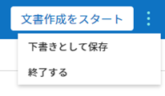

文書の新規作成¶
概要¶
eformsign を使用すると、誰もが簡単にお手持ちのファイルを電子文書化し、文書を作成、依頼、および処理できます。eformsign で電子文書を作成および送信する方法は、大きく2種類に分けられます。PCに保存されているファイルを直接アップロードして電子文書を作成する方法と、eformsign に保存されている既存のテンプレートを利用する方法です。
マイファイルで作成する：PCに保存された文書ファイル (PDF形式) を使って電子フォームを作成し、参加者に送信できます。
テンプレートで作成する：既存のテンプレートを使用して文書を作成します。テンプレートで作成する メニューをクリックすると、代表管理者またはテンプレートの管理権限を持つメンバーが作成しておいたテンプレートが画面に表示されます。
注釈
テンプレートの作成は、代表管理者またはテンプレー管理の権限を持つメンバーのみが可能です。また、テンプレートで作成する メニューで表示されるテンプレートは、各テンプレートの 権限の設定 で テンプレートの使用権限 を付与したメンバーのみに表示されます。テンプレートは、Webフォームデザイナー と フォームビルダー で作成できます。詳しくは Web フォームデザイナー と フォームビルダー をご参照ください。
重要
マイファイルで作成する で文書を作成する場合、作成した文書をテンプレートに変更したり保存したりすることはできません。よく使う文書の場合、テンプレートに登録しておくと便利です。
マイファイルで作成する¶
PDF形式のファイルを直接アップロードして、文書の上にコンポーネントを自由に配置します。各コンポーネントを参加者毎に指定した後、参加者および/または検討者の情報を入力し、送信することができます。
マイファイルで作成する メニューに移動します。

文書ファイル (PDF形式) をアップロードします。

注釈
現在は PDF 形式のみをサポートしていますが、今後様々なファイル形式にも対応していく予定です。
文書の作成に参加する 参加者 を追加し、タイプを設定します。

注釈
画面左上の 参加者を追加する ボタンをクリックして参加者を追加することもでき、最大30人まで設定できます。
受信先を指定する ステップでも設定した参加者の情報を変更および追加、削除できます。
各参加者が入力するコンポーネントを追加し、各コンポーネントの詳細設定を右側の プロパティ タブで指定します。

コンポーネントを追加した後、受信先を指定する ステップでメールアドレス、携帯電話番号など連絡先の情報を入力し、各受信者の詳細オプションを設定します。

注釈
受信者は、参加者 と 検討者 に区別されます。文書を作成するときに追加した参加者が 受信先を指定する ステップに表示され、各受信者のメールアドレスなど連絡先の情報を入力します。受信先を指定する 画面で参加者/検討者を削除/追加でき、各受信者の詳細オプションを設定します。
ちなみに
参加者と検討者の違い
参加者は署名、記入など文書のコンポーネントに入力することができます。一方、検討者は文書に入力することができず、文書を検討し、承認するかどうかのみを決定します。
ただし、コンポーネントの作成権限を 誰でも作成可能 に設定した場合、検討者もコンポーネントに入力することができます。
オプション をクリックし、文書のタイトル、完了文書に対するタイムスタンプの付与などを設定します。
注釈
このステップまでがフォームを設定するステップです。文書作成をスタート をクリックする前に下書き保存して作成を終了する場合、`下書きとして保存 <chapter8.html#drafts>`__ トレイに保存されます。保存されたファイルを開けば、作成を再開できます。文書の下書き保存は右上のメニュー () アイコンをクリックして表示される 下書きとして保存 をクリックします。

すべての設定を完了した後、文書作成をスタート をクリックします。

注意
文書作成をスタート をクリックした時点から課金の対象として集計されます。
文書を確認し、送信 ボタンをクリックすると、受信先に文書が送信されます。

{kind=link}
受信先を指定する > 受信先のオプション
デザインする または 受信先を指定する ステップで文書の参加者、つまり文書の受信先を追加することができます。
受信先を指定する ステップでは、参加者に対する詳細設定を行う 受信先のオプション の設定はもちろん、参加者を追加または削除したり、文書を検討する検討者を追加したりできます。
各参加者または検討者に対し、名前と送信先のメールアドレスまたは ID を入力する必要があります。参加者がメンバーである場合、リストから選択すると、登録されたメンバー情報が自動で入力されます。受信先のオプション は、参加者または 検討者がメンバーである場合と、メンバーではない外部の受信者である場合でそれぞれ異なって表示されます。
受信者がメンバーである場合
登録されたメールアドレスと携帯電話番号が自動で表示され、文書を送信する手段を選択できます。
注意
モバイル を選択する場合、SMSまたはカカオトーク通知で送信され、件数に比例して追加料金が発生します。
メンバーではない外部の受信者である場合
入力した情報がメンバーの情報と一致しない場合、外部受信者と認識され、次の項目についての詳細オプションを設定する必要があります。
送信手段の選択：メール と モバイル のうち一つまたは両方を選択でき、モバイル を選択した場合は携帯電話番号を入力する必要があります。
注意
モバイルを選択する場合、SMSまたはカカオトーク通知で送信され、件数に比例した追加料金が発生します。
文書の送信期限：外部受信者が文書を閲覧し、送信できる期限を設定でき、設定された期限が切れると文書を作成することができません。
パスワードの設定：チェックを入れると、外部受信者が文書を閲覧する前に、設定しておいたパスワードを入力する必要があります。パスワードのヒント で、受信者がパスワードを推測できるようなヒントを設定し、表示することができます。
文書の検討前に携帯電話で本人確認する：外部受信者が文書を閲覧/作成する前に、携帯電話で本人確認を行うよう設定します。この機能は追加料金が発生します。
完了文書の閲覧前に携帯電話で本人確認する：外部受信者が完了文書を閲覧する前に、携帯電話で本人確認を行うよう設定します。この機能は追加料金が発生します。
{kind=link}
{kind=link}
テンプレートで作成する¶
よく使うフォームをテンプレート化しておくと、文書の処理過程であるワークフローなどの詳細設定をテンプレート毎に保存し、必要に応じて文書を作成および送信できます。テンプレートは Webフォームデザイナー または フォームビルダー を使って作成できます。詳しくは Webフォームデザイナー と フォームビルダー をご参照ください。
注釈
文書の作成は、テンプレート管理の権限を持つメンバーが テンプレートの設定 > 権限の設定 で テンプレートの使用権限 (=文書の作成権限) を付与したグループまたはメンバーのみが可能です。テンプレートの使用権限を付与されたグループまたはメンバーのテンプレートリストのみにそのテンプレートが表示され、作成できます。
ダッシュボードまたはサイドバーのメニューで テンプレートで作成するをクリックします。

目的のテンプレートの 作成 アイコン(
 ) をクリックします。
) をクリックします。文書を作成し、画面右上の 作成完了 もしくは 依頼 ボタンをクリックすると、文書のワークフローに指定された次のステップに送信されます。途中で作成をやめて保存する場合は、下書き保存 ボタンをクリックして保存します。
注釈
テンプレートに設定されたワークフローによっては 作成完了、提出 もしくは 依頼 ボタンに異なって表示されます。
重要
テンプレートで作成する途中に 下書き保存 ボタンをクリックして下書き保存した文書は、下書きとして保存 トレイではなく、要処理文書 トレイに保存されます。
要処理文書 のリストから下書き保存した文書の 編集 ボタンをクリックすると、作成を続行できます。
{kind=link}
一括生成¶
文書トレイ 一括生成 テンプレートで作成する場合、一括生成 の機能を使用すると、一度に複数の文書を作成できます。
注釈
この作業を行うには、代表管理者の権限またはテンプレートの管理権限が必要です。
文書の新規作成 > テンプレートで作成する メニューに移動します。
目的のテンプレートの 一括生成 アイコンをクリックします。

画面に表示される各コンポーネントに説明を入力します。
注釈
文書内のコンポーネントが各カラムとして表示されているテーブルです。コンポーネントの ID が、各カラムのタイトルとして表示されます。番号 カラムの一番下の行の番号が作成される文書の数です。
テーブルは、Excel と同様の方法で入力します。各セルをダブルクリックして内容を入力し、マウスを右クリックして行を追加または削除できます。セルに入力した値をコピーと貼り付け、ドラッグして入力することができます。
右上の プレビュー ボタンをクリックして、作成した文書の内容を確認した後、生成 ボタンをクリックして文書の作成を完了します。
注釈
一括生成 のテーブルに表示される青い領域には、依頼を送信する外部受信者の名前、メールアドレスなどを入力します。外部受信者の処理ステップの設定に応じて、携帯電話番号、認証パスワードなどを入力できます。
ちなみに
テンプレートのコンポーネントの一部が 一括生成 画面に表示されない場合は、次の2つのケースを確認してください。
1.一括生成 で入力できないコンポーネント：写真、録音、およびグループ化されている ラジオ コンポーネントは、一括生成 では作成できないコンポーネントです。
2.作成 ステップでアクセスが許可されているコンポーネント：テンプレート管理 > テンプレートの設定(⚙) > ワークフローの設定 でアクセスが許可されているコンポーネントのみが表示されます。
{kind=link}
{kind=link}